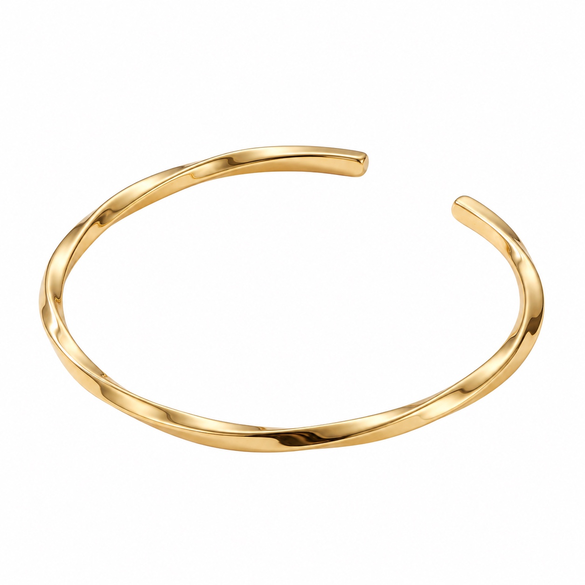
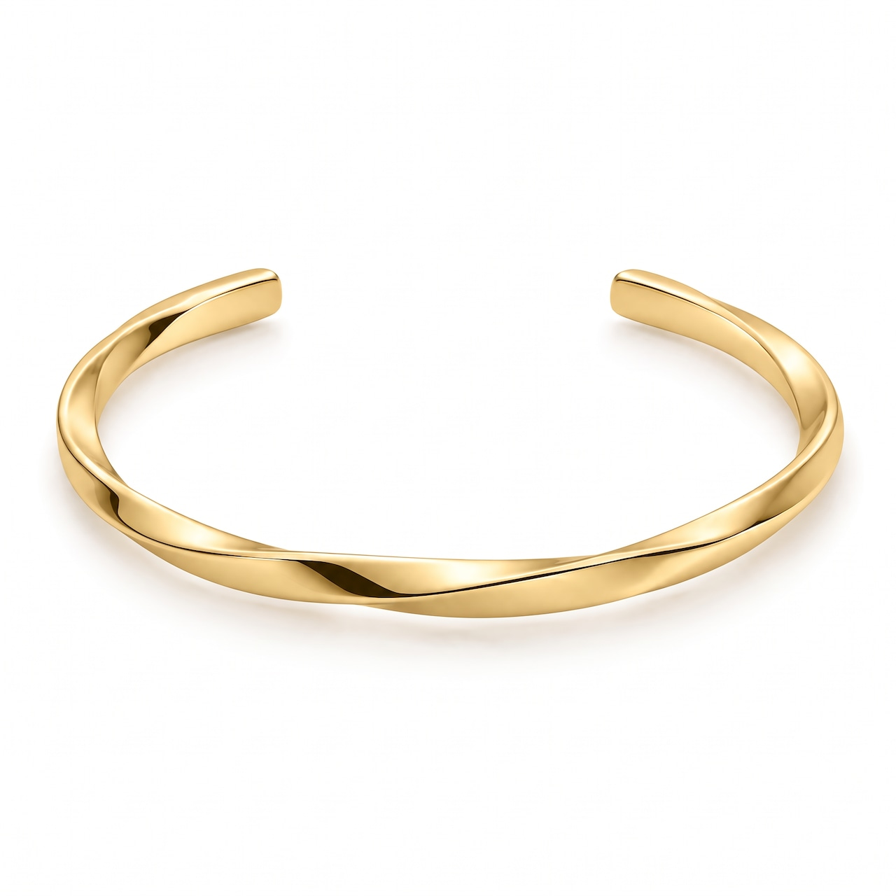

01 / GRAPHIC COLLECTION
脚下照顧
幸運は、遠くにあるとは限らない。
足元を見つめ直し、今ある豊かさや小さな幸せに気づく。
詳細を見るコンセプトを視覚化し、形のないアイデアに輪郭を与える領域。グラフィック、映像、UIなど多層的なデザインを通して“伝える”を“魅せる”へ変換するクリエイティブ制作。
画像をタップして全画面で見る
01 / WINE LABEL DESIGN
ワインラベルデザイン

北海道・八剣山の特徴的なシルエットをグラスの中に描き、産地が直感的に伝わるラベルデザインとしました。白ワインには爽やかな男性、赤ワインには大人の女性を配し、ネクタイ・リップ・ネイルをアクセントカラーに設定。
赤白を並べると二人が同じワインを楽しむ情景が浮かぶよう構成しています。ワインを手に取るきっかけになる視覚的ストーリー性を意識したラベルデザインです。
02 / BRAND IDENTITY
ペットクリニックのロゴデザイン


動物たちが安心できるクリニックを目指し、親しみやすく清潔感のあるビジュアルアイデンティティを構築しました。
ロゴは「動物たちを見守る月」をモチーフに、診察券・薬袋・外観サインまで一貫したカラーとシルエットで統一。来院する飼い主とペットが、安心して利用できる温かいブランド体験をデザインしました。
03 / A / CHARACTER DESIGN
スイスイカモノハシ


Suicaの新キャラクターを想定し、交通だけでなく日常のさまざまなシーンに寄り添う存在として「スイスイカモノハシ」をデザインしました。
丸みのある親しみやすいフォルムと、Suicaを手にした特徴的なポーズで、ひと目でサービスとのつながりが伝わる設計に。広告・アプリ・グッズなど幅広い展開を想定し、表情やポーズのバリエーションまで含めて世界観を構築しています。
03 / B / CHARACTER DESIGN
しろわし
白ワシをモチーフに、シンプルで親しみやすいオリジナルキャラクター「SHIROWASHI」をデザインしました。白を基調とした丸みのあるフォルムに、黄色のくちばしと足をアクセントとして取り入れ、ひと目で覚えやすいビジュアルに設計。
白ワシらしさを表現する魚を持ったポーズをはじめ、正面・背面など複数のアングルを制作し、キャラクターとしての一貫性を持たせています。ロゴやアパレル、グッズなど幅広い展開を想定し、ブランドとして活用できる世界観まで構築しました。
商品情報を読み込んでいます。
SHOPページで見る →03 / C / CHARACTER DESIGN
くろうさぎ
好きなものには素直で、自由で、どこか憎めない。そんな性格を持つ、うさぎのオリジナルキャラクター「KURO USAGI」を制作しました。大きな耳と丸い目によるシンプルで親しみやすいシルエットに、バナナを象徴的なモチーフとして組み合わせています。
座る、寝る、抱きつく、覗くといったさまざまなポーズを展開し、ひと目で性格や感情が伝わるキャラクター設計を意識しました。ビジュアルはブラックを基調に、鮮やかなイエローをアクセントとして採用。シンプルかつ視認性の高いデザインにすることで、アパレルやグッズ、SNS、広告など、幅広い媒体への展開を想定しています。
商品情報を読み込んでいます。
SHOPページで見る →03 / D / CHARACTER DESIGN
タコレオ
大阪を象徴する「たこ焼き」と「ライオン」を掛け合わせたオリジナルキャラクター「TAKOLEO（タコレオ）」をデザインしました。ライオンのたてがみをたこ焼きに見立て、ソース、マヨネーズ、青のり、かつお節といった特徴的な要素を取り入れています。尻尾の先端もたこ焼きをモチーフとし、一目で大阪らしさが伝わるビジュアルに仕上げました。
親しみやすい丸みのあるフォルムと太いアウトラインを基調に、キャラクター単体だけでなく、アパレル、グッズ、SNS、広告などへの展開も想定したシンプルで視認性の高いデザインです。ENJOY IT WHILE IT’S HOT.「熱いうちに楽しめ。」をコンセプトに、食べ物としての“熱さ”と、今この瞬間を楽しむというメッセージを重ねています。
商品情報を読み込んでいます。
SHOPページで見る →04 / A / PASTRY BRANDING
パティスリーのロゴデザイン

「Each one」の意味をロゴに込め、Eと“1”を一体化してデザインしました。左側に隠れた“E”、中央に配置した“1”によって、ブランド名を象徴的に表現。
一つひとつ丁寧に仕上げるケーキブランドの姿勢を、上質な円形シンボルと素材感で表現しています。
04 / B / BAKERY BRANDING
ベーカリーのブランディング

木目の素材感とクラシカルな装飾、赤いリボンを組み合わせたベーカリーのブランディング。看板の質感とシンボルを通して、温かみのある世界観を表現しています。
05 / STORE BRANDING
店舗ロゴデザイン


赤と白のネオンサインを中心に、日本酒をテーマとした店舗のビジュアルを展開。印象的なロゴとグラフィックによって、店舗の個性を視覚的に伝えています。
APPAREL / GRAPHIC DESIGN
思想を、身につけるアートへ。
日々の行動、心のあり方、何気ない瞬間に宿る価値。
目には見えない思想や感情を、色彩・タイポグラフィ・グラフィックによって視覚化する。
XEN GRAPHIC COLLECTIONは、日常の中にある大切なメッセージを、身につけるアートとして表現した作品シリーズです。
01 / GRAPHIC COLLECTION
幸運は、遠くにあるとは限らない。
足元を見つめ直し、今ある豊かさや小さな幸せに気づく。
詳細を見る
02 / GRAPHIC COLLECTION
何気ない今日が、かけがえのない一日になる。
特別な日を待つより、何気ない今日の喜びや美しさを見つめる。
詳細を見る
03 / GRAPHIC COLLECTION
今日の行動が、明日の未来をつくる。
一つひとつの選択と小さな思いやりが、より良い未来につながる。
詳細を見る
04 / GRAPHIC COLLECTION
心のあり方が変われば、世界の見え方も変わる。
自分の心と向き合い、日常に新しい美しさや価値を見いだす。
詳細を見る06 / APPAREL GRAPHICS
アパレルグラフィックデザイン


歌舞伎町のネオンやナイトカルチャーをモチーフにしたグラフィックデザイン。鮮やかな色彩とポップなイラストを組み合わせ、都市のエネルギーを表現しています。
07 / UNIFORM DESIGN
ブルゾンデザイン


スポーツウェアの機能性と都会的なミニマルデザインを融合したモダンブルゾン。大胆なV字カラーブロックで動きのある表情をつくり、落ち着いたグレーにブラックとオレンジのアクセントを加えることで、視認性とスタイリッシュさを両立。
日常からアクティブシーンまで幅広く着用できる、シャープで洗練されたアウターデザインを目指しました。
08 / JEWELRY 01 / DESIGN
ジュエリーデザイン



K18 Sculpted ChokerVIEW DETAILS
K18 Sculpted BangleVIEW DETAILSK18特有の深い黄金色と、滑らかな鏡面仕上げが、光の角度によって流れるような表情をつくり出します。チョーカーは2.5mm幅、バングルは2mm幅のミニマルなプロポーション。削ぎ落とされた線が、身につける人の輪郭を静かに引き立て、シルエットそのものを美しく整えてくれます。
エッジの丸み、肌触りの滑らかさ、装着時のフィット感——すべての工程を国内の職人が手仕事で仕上げ、“装飾ではなく存在を整えるジュエリー”として完成させました。性別を問わず、どんなスタイルにも溶け込む純度の高いミニマル・スカルプチャー。シャツからTシャツ、ジャケットスタイルまで幅広く対応し、日常の一部として自然に馴染みます。
本作に使用しているのはK18。750/1000の純度を持つイエローゴールドは、深みのある黄金色と高い耐久性を兼ね備え、毎日の着用にも適した素材です。K18は時間とともに艶が落ち着き、所有者の生き方に寄り添うように表情を変えます。
09 / JEWELRY 02 / RING
K18 シグネットリング
JEWELRY / RING
MATERIAL：K18 Yellow Gold
XEN K18 Signet Ringは、ブランドのアイデンティティをひとつの造形に凝縮したシグネットリングです。
リング正面には、XENを象徴する幾何学的なシンボルを配置。
直線と対角線が交差する構成は、秩序と独創性、静けさと力強さという異なる要素の共存を表現しています。
伝統的なシグネットリングの存在感を継承しながら、現代的なミニマリズムによって再構築しました。
身につける人の個性を主張しすぎることなく、その輪郭を静かに際立たせるジュエリーです。
K18イエローゴールドを採用。黄金そのものの色彩と、シンボルを構成する幾何学的なラインの美しさを引き立てるデザインです。
10 / JEWELRY 03 / RING
K18 ラピスラズリ シグネットリング

JEWELRY / RING
MATERIAL：K18 Yellow Gold / Lapis Lazuli
XEN K18 Lapis Lazuli Signet Ringは、ラピスラズリの深い青とK18イエローゴールドの輝きを融合させたシグネットリングです。
鮮やかでありながら落ち着きを感じさせるラピスラズリ。その青を背景に、XENの幾何学的なシンボルを大胆に配置しました。
直線的なシンボルと、天然石が持つ不規則な模様。人工的な造形美と自然が生み出す表情を対比させることで、ひとつの作品に異なる美しさを共存させています。
華やかさの中に静けさを、力強さの中に繊細さを。
単なる装飾を超え、創造性と個性を象徴するジュエリーとしてデザインしました。
K18イエローゴールドとラピスラズリを組み合わせた構成。黄金の温かみと天然石の深い青が、互いの色彩を際立たせます。
11 / PRODUCT GRAPHICS
スマホケースデザイン

抽象模様、花柄、幾何学パターンなど、多彩なビジュアルを展開したスマートフォンケースのグラフィックシリーズ。色彩と構図のバリエーションを通じて、幅広いデザイン表現を追求しています。
12 / T-SHIRT GRAPHICS
Tシャツデザイン

写真、イラスト、タイポグラフィ、抽象表現を取り入れたTシャツのグラフィックシリーズ。異なるテイストの作品を通じて、ファッションとアートを組み合わせた表現を展開しています。